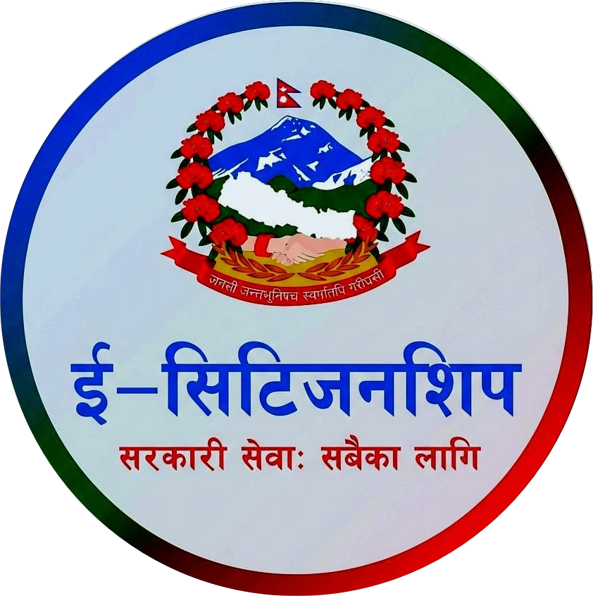

A unified national platform enabling citizens to access government-authorized citizenship services securely, transparently, and efficiently—anytime, anywhere.
Built for trust, accessibility, and national governance
Operated under Government of Nepal digital governance standards.
Citizen data protected with national cybersecurity protocols.
Track applications and updates in real time.
Accessible services for every citizen across the nation.
Operated under Government of Nepal digital governance standards.
Citizen data protected with national cybersecurity protocols.
Track applications and updates in real time.
Accessible services for every citizen across the nation.
The e-Citizenship portal is designed to provide secure and efficient digital government services to all
citizens.
Users are required to follow the guidelines below to ensure safe and proper use of the system:-
1. Citizens must register using their own valid mobile number and official identification details.
2. All information provided must match official government records.
3. Each citizen is permitted to maintain only one e-Citizenship account.
4. Login credentials, including passwords and OTPs, must not be shared with any individual or organization.
5. Uploaded documents must be original, clear, and readable.
6. Any attempt to provide false information or misuse the system may result in account suspension and legal action
under applicable laws of Nepal.
7. Citizens are responsible for maintaining the confidentiality of their account access.
This portal is an official initiative of the Government of Nepal, ensuring lawful operation, data integrity, and citizen privacy across all digital services.